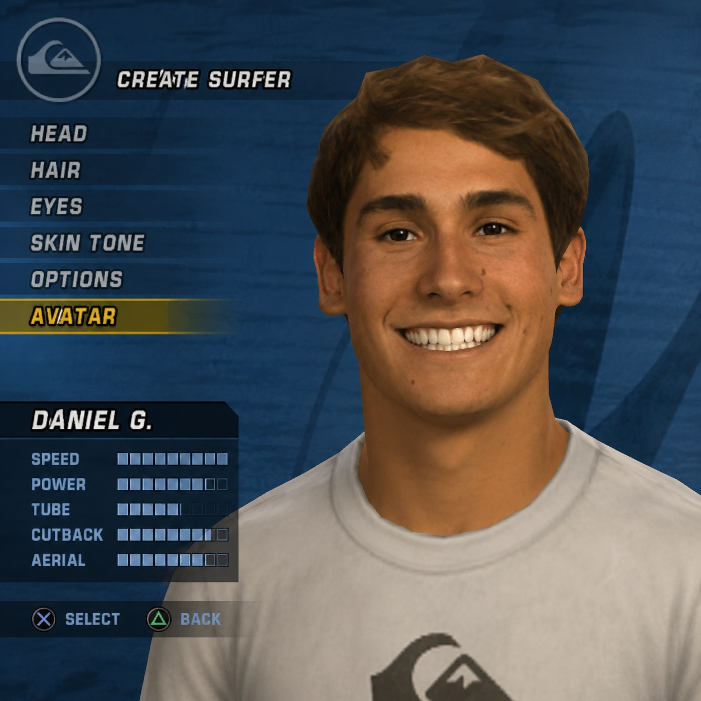

PLAYER PROFILE · EST. 2003
DANIEL
GUSTIN

I turn scattered signals into decisions: in data, and everywhere else I've had to figure things out from scratch.
Raised between Chile and the U.S., trained as an economist and analyst, and racing as an NCAA Division III swimmer while finishing a master's at NYU. I've spent the last few years translating messy, unstructured problems (attrition, revenue, program performance) into decisions that stakeholders actually act on.
 Consulting Intern
Consulting Intern
 Data Analytics Intern
Data Analytics Intern
 Research Analyst
Research Analyst
 Ops & People Analytics
Ops & People Analytics
 B.S. Economics
B.S. Economics
 M.S. Management & Analytics
M.S. Management & Analytics